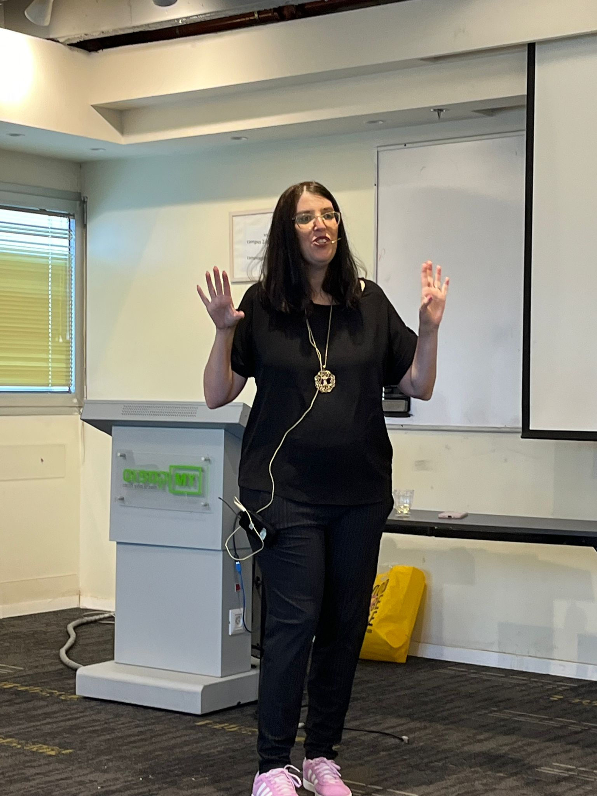

הסיפור שלך הוא המגנט לקליניקה שלך.
בואי נגלה אותו יחד.

מה מחכה לך בפנים?
-
שלב 1 – לגלות את היהלומים
30 שאלות מונחות שיחלצו מתוך סיפור החיים שלך את התובנות שהקהל שלך צמא לשמוע.
-
שלב 2 – לעצב את המסר
תבנית עבודה פשוטה ומבנית (בלי להסתבך!) לבניית ההרצאה הראשונה שלך.
-
שלב 3 – להעז ולדבר
הכלים המנטליים להתמודדות עם תסמונת המתחזה ("מי אני שאדבר על זה?") ולמעבר בטוח לקדמת הבמה.
מה הן מספרות...
"תמיד הרגשתי שהסיפור שלי רגיל לחלוטין ושאין לי מה לחדש. הליווי של יפעת נתן לי את הביטחון להעז לעלות על במה ולדבר."
"הייתי תקועה המון זמן עם 'תסמונת המתחזה' והרבה סימני שאלה. יפעת פירקה לי את הכל למשימות פשוטות, בלי להסתבך. בזכותה הפסקתי להתחבא מאחורי המקלדת."
"יפעת עזרה לי לדייק את המסר שלי, והיום אני במקום אחר."
קליק אחד על הכפתור ← שולחת לי הודעת וואטסאפ אוטומטית (בלי אותיות קטנות) ← המדריך נוחת אצלך בנייד 💜
קצת עליי
אם עוד לא הכרנו נעים מאוד, אני ממש שמחה שאת פה. שמי יפעת ואני מאמנת מטפלות, יועצות ומאמנות לעשות את מה שהן יודעות לעשות הכי טוב ולהרוויח מהשליחות שלהן. אני באה מעולמות של משאבי אנוש, ניהול ועמותות. בעלת תואר שני בחינוך, מאמנת מוסמכת, מאסטר & טריינר NLP.
אבל מה שעושה אותי רלוונטית עבורך זה שהייתי בדיוק כמוך, או לפחות ממש דומה. עם הזמן גיליתי שהמתאמנות החביבות עלי הן הקולגות שלי שאני ממש שמחה תמיד לעבוד איתן ולעזור להן. אני מביאה איתי ראייה מערכתית רחבה, הבנה בשיווק וטכנולוגיה וניסיון כמרצה. אני לא מנסה לשנות אותך אלא לעזור לך לבנות את מה שמתאים לתדר שלך.